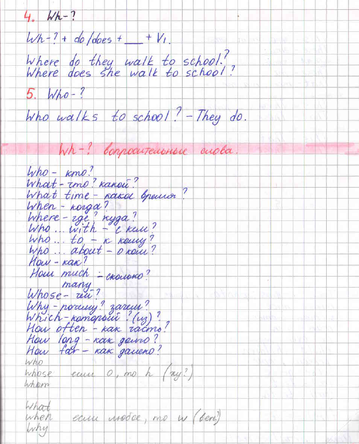
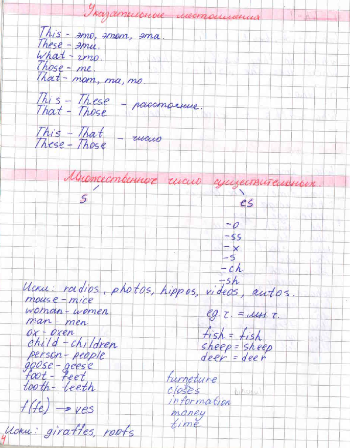
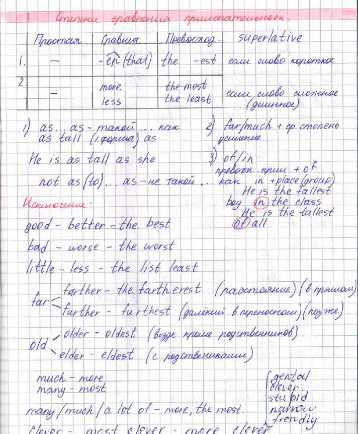
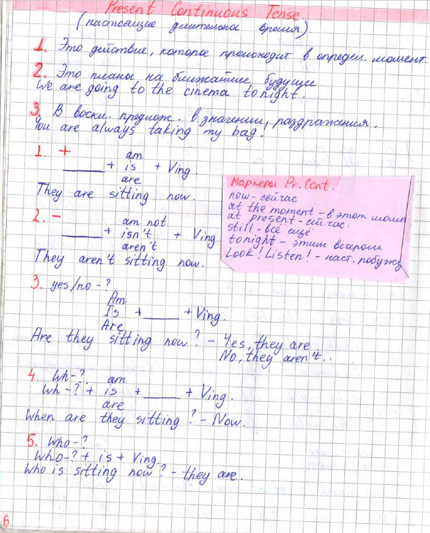
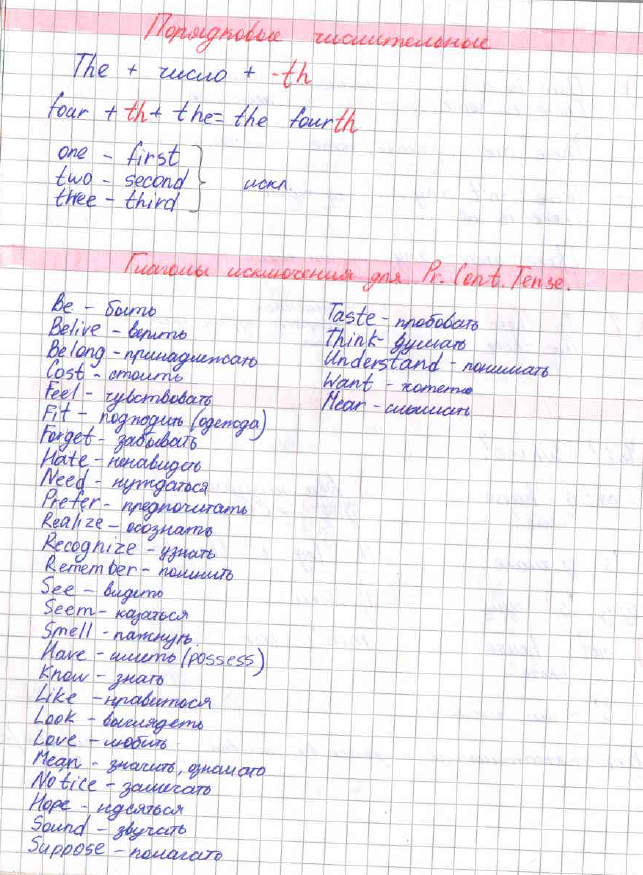
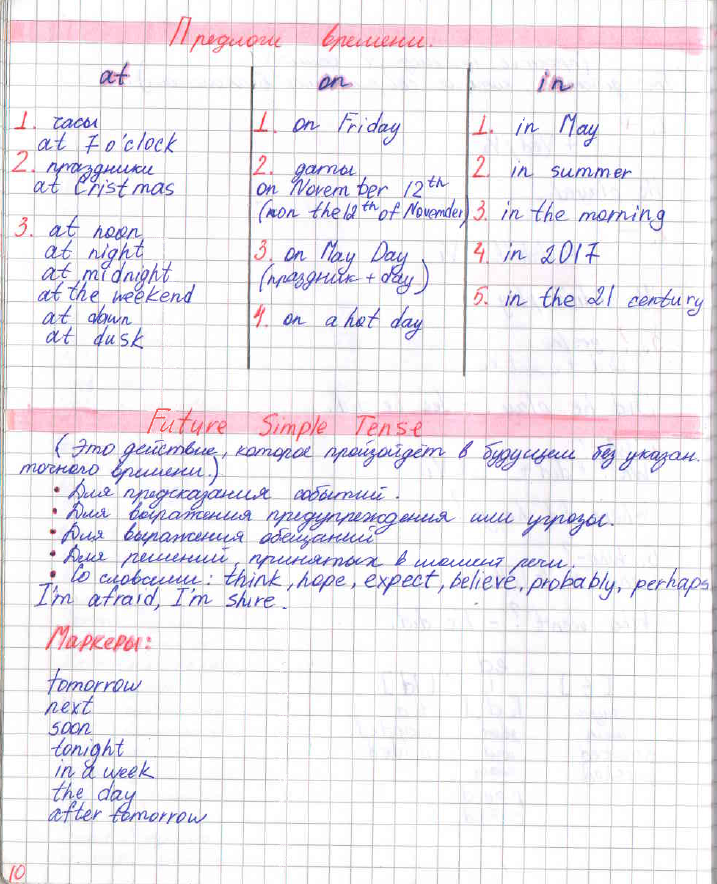
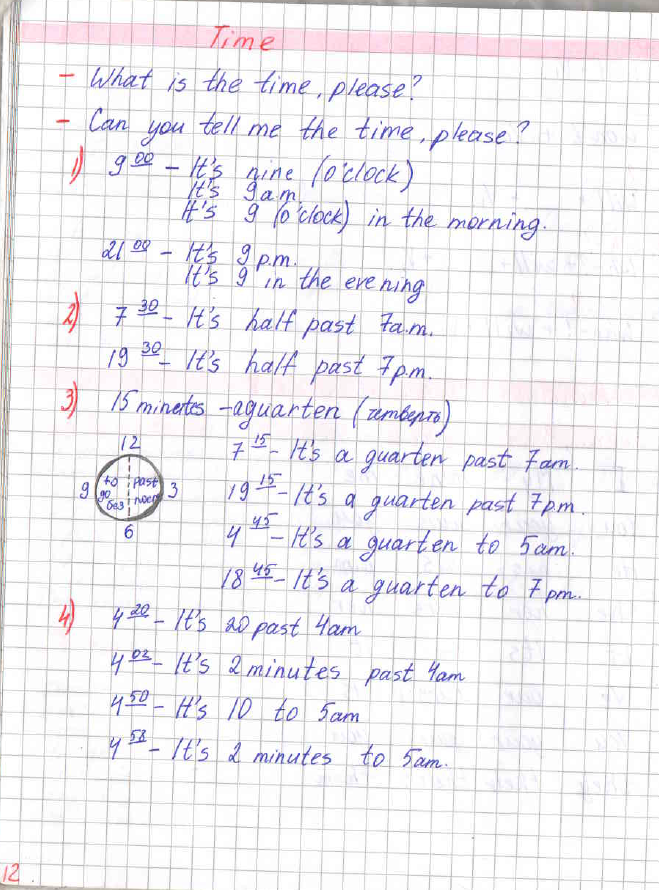
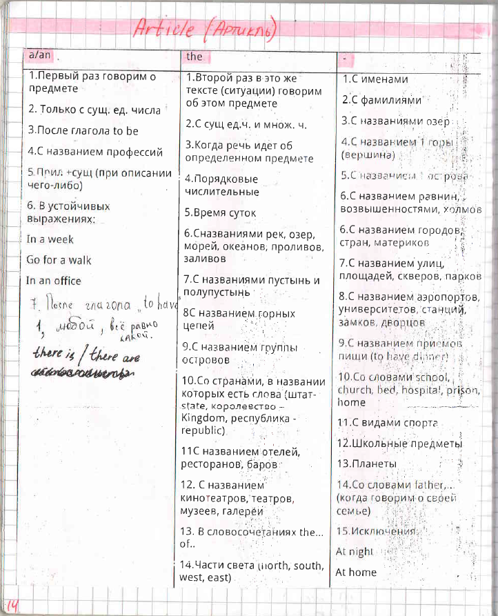
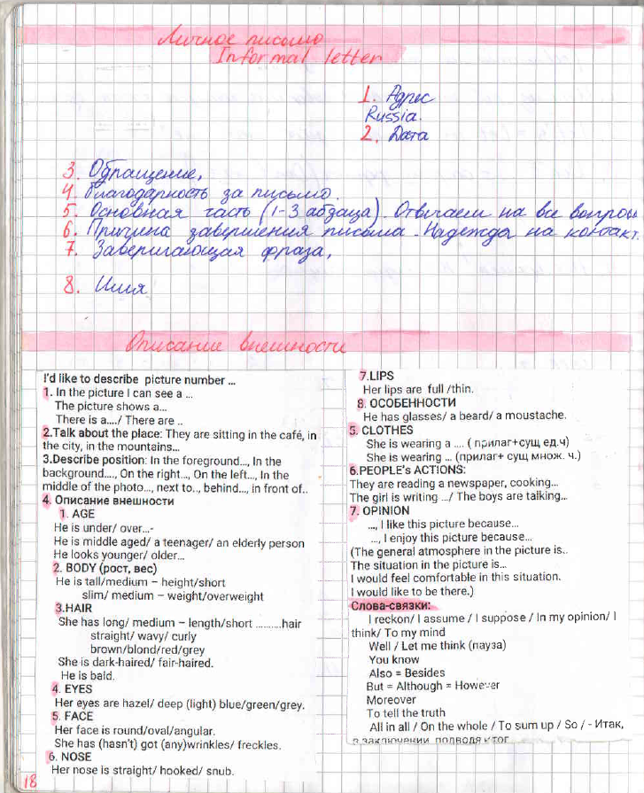
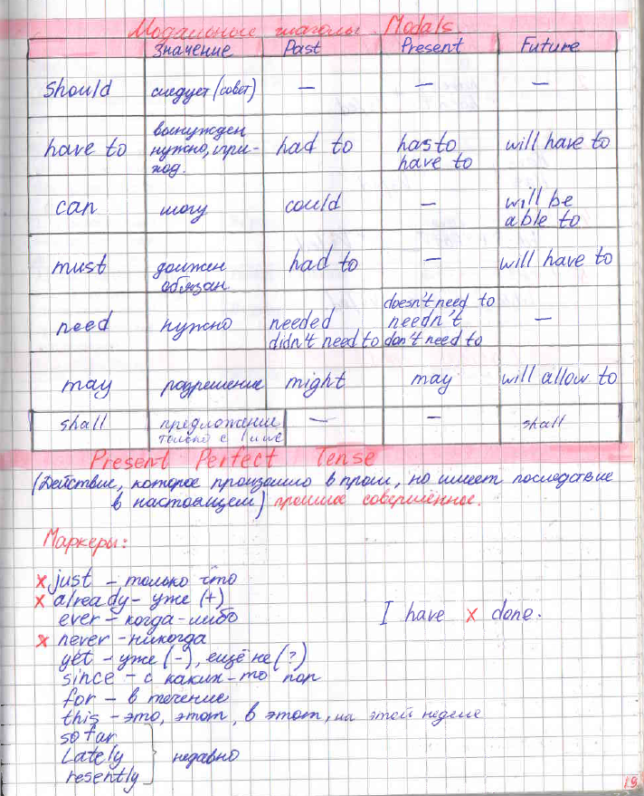

Грамматика по темам
2a. Wh- вопросительные слова

2b. Указательные местоимения
3a. Степени сравнения прилаг.

3b. Present Continuous Tense
4a. There is / There are

5a. Past Simple Tense

6a. Pronouns: Местоимения

8a. Предлоги времени - места

10a. Глаголы play/go/do с видами спорта

10b. Present Perfect Tense
11b. Способы выражения Future S.
12a. Описание внешности

13b. Quantity + Quantifiers
14a. Местоимения Some/Any/No

16b. Infinitive (инфинитив)
18a. Pr.S and Pr.Cont

19a. Used to / be used to / get used to
